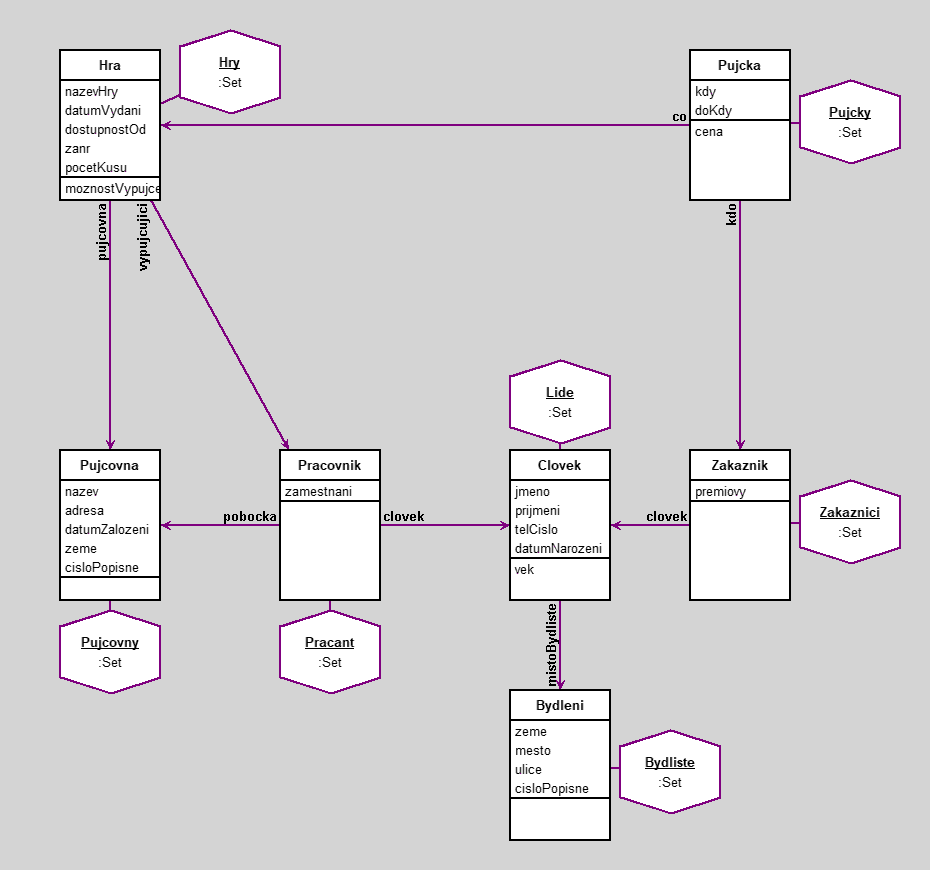

Pujcovna videoher
author(s): Adam Bil
Objektove modelovani, Adam Bíl (INFO, 3. studijni skupina)
Vzhledem k me celozivotni zalibe v pocitacovych hrach jsem se rozhodl za svuj semestralni projekt na predmet Objektove modelovani vytvorit 'databazi' pujcovny videoher. Je zde zaznamenana personalistika pujcoven, jejich zakazniku a sortiment v jednotlivych pujcovnach.
Zakladem celeho projektu je sedm trid, ktere jsem pojmenoval Pujcovny, Hry, Bydliste, Lide, Zakaznici, Pracovnik a Pujcky.
Trida Pujcovny obsahuje nazev pujcovny, adresu, kde se pujcovna nachazi, datum zalozeni, tedy kdy vlastne byla pujcovna vystavena, zemi, ve ktere se nachazi a cislo popisne.
Trida Hry, ve ktere je nazev hry, datum vydani hry, od kdy je hra dostupna na vypujceni, zanr hry a ve ktere pujcovne se hra nachazi.
Trida Bydliste, ve ktere je zaznamenana zeme, mesto, ulice a cislo popisne. Cela tato trida slouzi k propojeni s jednotlivymi osobami.
Trida Lide obsahuje jmeno, prijmeni, telefonni cislo, datum narozeni a misto bydliste jednotlivych osob.
Trida Zakaznici odkazuje na jednotlive osoby a to, zda si lide plati premiovy ucet v pujcovne.
Trida Pracovnik obsahuje informace o pracovni pozici osoby, odkaz na jednotlive osoby a pobocku, na ktere osoba pracuje.
Trida Pujcky odkazuje na osobu, ktera si hru vypujcuje, co si vypujcuje a od kdy do kdy si hru vypujci.
Dotazy jsou vsechny popsany ve workspacu v zalozce objects.
Dulezite je take samozrejme propojeni jednotlivych trid.
Hry jsou propojeny s pujcovnami, aby lide vedeli, kde se hra nachazi. Bydliste je propojeno s lidmi, pro informace o jejich momentalnim misto bydliste. Zakaznici jsou propojeni s lidmi a pujckami, stejne tak je pracovnik spojen s lidmi a pujcovnami. V posledni rade jsou hry spojeny s pujckami.
Nadale jsou take dve "skryte" metody, a to vek u osob a cena pujcky vzhledem k casu, ktery bude hra vypujcena.
Workspace
Pujcovna project: #nazev with: #adresa.
((Clovek select: [:x|x vek>=23]) project: #jmeno with: #prijmeni with: #vek).
((Hra select: [:x|x dostupnostOd >='5.14.2017' asDate]) project: #nazevHry).
((Hra select: [:x|x zanr = 'FPS']) project: #nazevHry with: #pujcovna).
((Pujcka select: [:x|x cena > 200]) project: #co with: #kdo with: #cena).
((Zakaznik select: [:x|x premiovy = 1]) project: #clovek).
"Nedostacijici dotazy jsou popsany nahore, dostacujici jsou popsany dole"
"Vypise jmeno cloveka, ktery vypujcil Witchera 3"
(Hry select: [: x | x nazevHry = 'Witcher 3']) collect: [:x | x vypujcujici clovek]
"Vypise krestni jmeno toho, kdo si co vypujcil hru May 14, 2017"
(Pujcky select: [:x | x kdy = '5.26.2017' asDate]) collect: [:x | x kdo clovek jmeno] with: [:x | x co nazevHry]
"Vypise jmeno a prijmeni osob starsich 23 let a napise mesto a ulici, ve ktere bydli"
(Lide select: [:x|x vek>=23]) collect: [:x | x mistoBydliste mesto] with: [:x|x mistoBydliste ulice] with: [:x| x jmeno] with: [:x|x prijmeni]
"Vypise jmeno a prijmeni cloveka pracujiciho na pobocce JRC a jeho pozici"
(Pracant select: [:x | x pobocka nazev = 'JRC']) collect: [:x| x clovek jmeno] with: [:x|x clovek prijmeni] with: [:x|x zamestnani]
"Pokud je hra skladem, vypise jeji nazev, pujcovnu a jmeno a prijmeni pripadneho vypujcujiciho zamestnance"
(Hry select: [:x|x moznostVypujceni = true]) collect: [:x|x nazevHry] with: [:x|x pujcovna] with: [:x|x vypujcujici clovek jmeno] with: [:x|x vypujcujici clovek prijmeni]
Workspace Objects
-
Bydliste :Set
-
Hry :Set
-
Lide :Set
-
Pracant :Set
-
Pujcky :Set
-
Pujcovny :Set
-
Zakaznici :Set
Script
"Note that variables begining with uppercase letter will be moved into the workspace pool."
Pujcovny := Set new.
p1 := Pujcovna new.
p1 nazev: 'JRC'.
p1 adresa: 'Praha-Andel'.
p1 datumZalozeni: '1.1.2013' asDate.
p1 zeme: 'Ceska republika'.
p1 cisloPopisne: '25210' asNumber.
p2 := Pujcovna new.
p2 nazev: 'X-Zone'.
p2 adresa: 'Korunni 1279/64'.
p2 datumZalozeni: '5.14.2012' asDate.
p2 zeme: 'Ceska republika'.
p2 cisloPopisne: '15200' asNumber.
p3 := Pujcovna new.
p3 nazev: 'GAMEplus.cz'.
p3 adresa: '28. pluku 631/42'.
p3 datumZalozeni: '7.18.2015' asDate.
p3 zeme: 'Ceska republika'.
p3 cisloPopisne: '62100' asNumber.
Pujcovny add: p1; add: p2; add: p3.
Hry := Set new.
h1 := Hra new.
h1 nazevHry: 'Team Fortress 2'.
h1 datumVydani: '10.9.2007' asDate.
h1 dostupnostOd: '5.14.2017' asDate.
h1 zanr: 'FPS'.
h1 pocetKusu: 2.
h1 pujcovna: p1.
h2 := Hra new.
h2 nazevHry: 'Witcher 3'.
h2 datumVydani: '5.19.2015' asDate.
h2 dostupnostOd: '5.2.2017' asDate.
h2 zanr: 'RPG'.
h2 pocetKusu: 3.
h2 pujcovna: p2.
h3 := Hra new.
h3 nazevHry: 'Beat Hazard'.
h3 datumVydani: '5.28.2009' asDate.
h3 dostupnostOd: '5.26.2017' asDate.
h3 zanr: 'Indie'.
h3 pocetKusu: 0.
h3 pujcovna: p3.
Hry add: h3; add: h2; add: h1.
Bydliste := Set new.
b1 := Bydleni new.
b1 zeme: 'Ceska republika'.
b1 mesto: 'Praha'.
b1 ulice: 'Slezska 14'.
b1 cisloPopisne: '15000' asNumber.
b2 := Bydleni new.
b2 zeme: 'Ceska republika'.
b2 mesto: 'Cernosice'.
b2 ulice: 'Arbesova 20'.
b2 cisloPopisne: '25224' asNumber.
b3 := Bydleni new.
b3 zeme: 'Ceska republika'.
b3 mesto: 'Liberec'.
b3 ulice: 'Revnicka 15'.
b3 cisloPopisne: '66633' asNumber.
b4 := Bydleni new.
b4 zeme: 'Ceska republika'.
b4 mesto: 'Praha'.
b4 ulice: 'Lipanska 4'.
b4 cisloPopisne: '13000' asNumber.
b5 := Bydleni new.
b5 zeme: 'Ceska republika'.
b5 mesto: 'Kladno'.
b5 ulice: 'Plzenska 32'.
b5 cisloPopisne: '26541' asNumber.
b6 := Bydleni new.
b6 zeme: 'Ceska republika'.
b6 mesto: 'Plzen'.
b6 ulice: 'Kladenska 19'.
b6 cisloPopisne: '14563' asNumber.
Bydliste add: b1; add: b2; add: b3; add: b4; add: b5; add: b6.
Lide := Set new.
l1 := Clovek new.
l1 jmeno: 'Adam'.
l1 prijmeni: 'Bil'.
l1 telCislo: '7775421358' asNumber.
l1 datumNarozeni: '2.7.1996' asDate.
l1 mistoBydliste: b1.
l2 := Clovek new.
l2 jmeno: 'Karolina'.
l2 prijmeni: 'Skalova'.
l2 telCislo: '731564892' asNumber.
l2 datumNarozeni: '8.3.1993' asDate.
l2 mistoBydliste: b2.
l3 := Clovek new.
l3 jmeno: 'Jan'.
l3 prijmeni: 'Hauer'.
l3 telCislo: '743654841' asNumber.
l3 datumNarozeni: '8.4.1990' asDate.
l3 mistoBydliste: b3.
l4 := Clovek new.
l4 jmeno: 'Tomas'.
l4 prijmeni: 'Novotny'.
l4 telCislo: '741236598' asNumber.
l4 datumNarozeni: '1.3.1991' asDate.
l4 mistoBydliste: b4.
l5 := Clovek new.
l5 jmeno: 'Vojtech'.
l5 prijmeni: 'Kraus'.
l5 telCislo: '777841236' asNumber.
l5 datumNarozeni: '11.9.1996' asDate.
l5 mistoBydliste: b5.
l6 := Clovek new.
l6 jmeno: 'Jiri'.
l6 prijmeni: 'Nebesky'.
l6 telCislo: '604521459' asNumber.
l6 datumNarozeni: '9.11.1984' asDate.
l6 mistoBydliste: b6.
Lide add: l1; add: l2; add: l3; add: l4; add: l5; add: l6.
Zakaznici := Set new.
z1 := Zakaznik new.
z1 premiovy: 1.
z1 clovek: l1.
z2 := Zakaznik new.
z2 premiovy: 0.
z2 clovek: l2.
z3 := Zakaznik new.
z3 premiovy: 0.
z3 clovek: l3.
Zakaznici add: z1; add: z2; add: z3.
Pracant := Set new.
prc1 := Pracovnik new.
prc1 zamestnani: 'prodavac'.
prc1 clovek: l4.
prc1 pobocka: p1.
prc2 := Pracovnik new.
prc2 zamestnani: 'prodavac'.
prc2 clovek: l5.
prc2 pobocka: p2.
prc3 := Pracovnik new.
prc3 zamestnani: 'prodavac'.
prc3 clovek: l6.
prc3 pobocka: p3.
Pracant add: prc1; add: prc2; add: prc3.
Pujcky := Set new.
pu1 := Pujcka new.
pu1 kdo: z1.
pu1 co: h1.
pu1 kdy: '5.14.2017' asDate.
pu1 doKdy: '5.19.2017' asDate.
pu2 := Pujcka new.
pu2 kdo: z2.
pu2 co: h2.
pu2 kdy: '5.2.2017' asDate.
pu2 doKdy: '5.14.2017' asDate.
pu3 := Pujcka new.
pu3 kdo: z3.
pu3 co: h3.
pu3 kdy: '5.26.2017' asDate.
pu3 doKdy: '5.28.2017' asDate.
Pujcky add: pu1; add: pu2; add: pu3.
h1 vypujcujici: prc1.
h2 vypujcujici: prc2.
h3 vypujcujici: prc3.
Diagram

Classes
Pujcovna
|
instance variables
adresa :String
cisloPopisne :Number
datumZalozeni :Date
nazev :String
zeme :String
|
methods
adresa
adresa:
cisloPopisne
cisloPopisne:
datumZalozeni
datumZalozeni:
initialize
nazev
nazev:
zeme
zeme:
|
|
|
code of non-accessing methods:
Bydleni
|
instance variables
cisloPopisne :Number
mesto :String
ulice :String
zeme :String
|
methods
cisloPopisne
cisloPopisne:
initialize
mesto
mesto:
ulice
ulice:
zeme
zeme:
|
|
|
code of non-accessing methods:
Clovek
|
instance variables
datumNarozeni :Date
jmeno :String
mistoBydliste :Object
prijmeni :String
telCislo :Number
|
methods
datumNarozeni
datumNarozeni:
initialize
jmeno
jmeno:
mistoBydliste
mistoBydliste:
prijmeni
prijmeni:
telCislo
telCislo:
vek
|
|
|
code of non-accessing methods:
-
initialize
"generated by Daskalos"
super initialize.
jmeno := nil.
prijmeni := nil.
telCislo := nil.
datumNarozeni := nil.
mistoBydliste := nil.
-
vek
datumNarozeni isNil ifTrue: [^0].
^((Date today subtractDate: datumNarozeni) / 365.2422) truncated
Zakaznik
|
instance variables
clovek :Object
premiovy :Number
|
methods
clovek
clovek:
initialize
premiovy
premiovy:
|
|
|
code of non-accessing methods:
Pujcka
|
instance variables
co :Object
doKdy :Date
kdo :Object
kdy :Date
|
methods
cena
co
co:
doKdy
doKdy:
initialize
kdo
kdo:
kdy
kdy:
|
|
|
code of non-accessing methods:
Pracovnik
|
instance variables
clovek :Object
pobocka :Object
zamestnani :String
|
methods
clovek
clovek:
initialize
pobocka
pobocka:
zamestnani
zamestnani:
|
|
|
code of non-accessing methods:
Hra
|
instance variables
datumVydani :Date
dostupnostOd :Date
nazevHry :String
pocetKusu :Number
pujcovna :Object
vypujcujici :Object
zanr :String
|
methods
datumVydani
datumVydani:
dostupnostOd
dostupnostOd:
initialize
moznostVypujceni
nazevHry
nazevHry:
pocetKusu
pocetKusu:
pujcovna
pujcovna:
vypujcujici
vypujcujici:
zanr
zanr:
|
|
|
code of non-accessing methods:
Links
Data file and
class source.
Generated by Daskalos - Object Modeling Tutor (C) 2006 V. Merunka
June 21, 2017